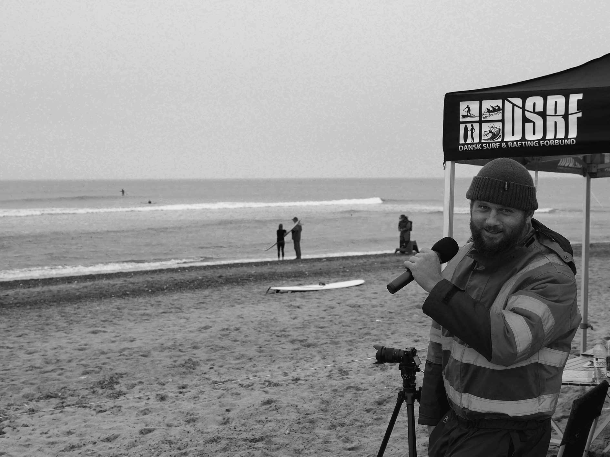
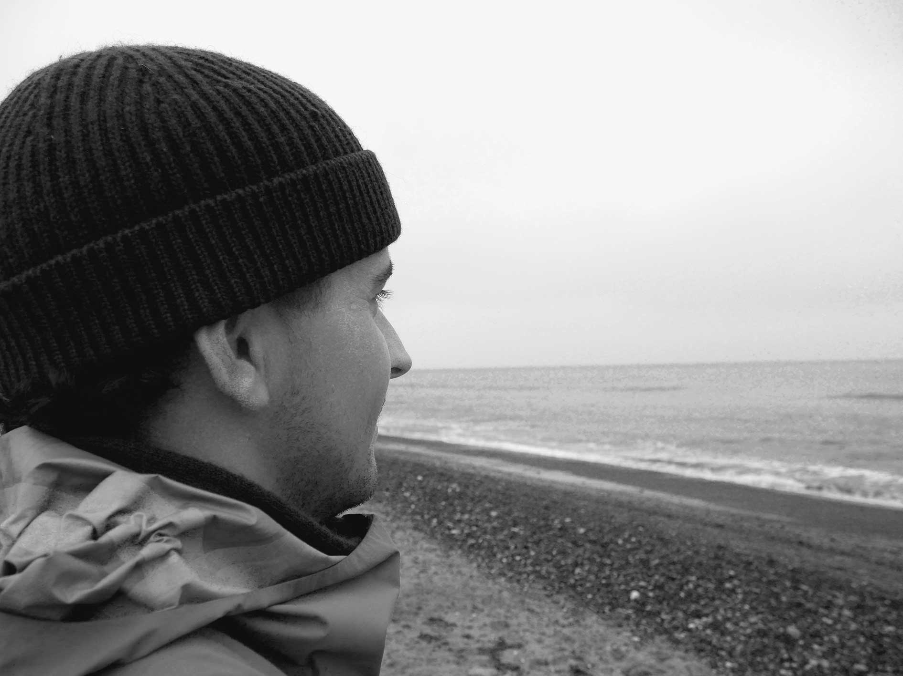

Frederik Steinfath, 25
Surf kommentator, tilkalde-vikar, konferencier, basketball, surfing, journalistik – den gode historie.
Hvor længe har du surfet?
“5 år konstant, men prøvede for første gang som 6 årig.”
Hvor har du lært det?
“Alle mulige steder i Thy. Der var sommer hvor jeg havde en lille grøn polo, som blev fyldt med boards, det synes jeg var virkelig fedt. Derefter var jeg med alle drengene heroppe som er gode. Jeg kan ikke lige huske hvor præcis jeg lærte det, jeg havde prøvet det før hvor jeg havde lidt med fra. Men i 2016 begyndte jeg for alvor da jeg flyttede herop til Klitmøller.”
Hvordan blev du grebet af at surfe?
“Det var det der meget inkluderende miljø, og det med at flyve hen af bølgen og få lettet sine tanker. Men det er ikke fordi man ikke tænker mens man er på bølgen, fordi man koncentrere sig en smule. “
Hvorfor surfer du?
”Jeg surfer fordi, jeg klamrer mig til et minde om en bølge hvor man er helt oppe og køre, det vil jeg gerne opleve igen. Det er ikke altid sådan det fungerer, men man kan få lov at træne til at den rigtige bølge kommer. Det kunne være fedt at få den gode bølge herhjemme hver gang.”
Hvordan er det have et familiært forhold til surfing, have gode muligheder igennem din fætter, hvordan har det påvirket dit forhold til surfing?
“Det har været godt at have nogle at læne sig opad, og som kan hjælpe en. Jeg har været på rejser med dem, men samtidig har de ikke givet så meget hjælp til at blive god. De har ikke været gode til at forklare eller sætte ord på hvordan man gør. Men nærmere bare accepteret mig og taget mig med. Jeg har fået så meget, så nu skal jeg også give en masse, derfor hjælper jeg mine venner, f.eks Anders har jeg prøvet at vise en vej for.”
Fortæl en surf historie som er spændende, farlig eller bare fed.
”Jeg var ved at være sådan okay til at surfe, jeg har lært det på rigtige boards. Vi skulle ud på softtops i stormvejr, vi var på ud fra molen i Hanstholm. Lige pludselig kommer der en bølge som var dobbelt så stor som de andre, den landede lige på mit hoved, og jeg blev trykket. Jeg kunne ikke få luft, og det sortnede. ”Kunne det være nu at alt var forbi?” spurgte jeg mig selv, men jeg kom op. Der kom en bølge lige oveni igen. Helt færdig. Endelig kom jeg ud efter, og havde det skidt. Jeg følte at, det var ikke det værd. Jeg så en af de andre som havde knækket deres board. Jeg endte med at surfe lidt længere inde, hvor det en smule roligere. Sjovt nok har folk forskellige indblik fra sessionen, de andre havde haft sjovt, hvori jeg havde en helt anden slags session. Man griner måske lidt af de nye på store fald, men det er nok også det der har gjort surfing til hvad det er i dag. Vi skubber hinanden til nye højder.”
Anders Boss Nielsen, 23
Håndværker i sit eget firma, surfing, jagt, socialt.

Hvor længe har du surfet?
“3 års surfing”
Hvor har du lært det?
“På revet. Det var en december dag, bidende koldt med -2 grader pålands vind. Frederik hev mig med ud. Jeg fangede en bølge lige da jeg kom ud, men faldt og slog halebenet på en sten. Jeg blev en halv time mere. Jeg kom ind og fik et bad, hvor der kom en mand og gav mig varm kakao. Og derfra var jeg bidt. Dejlig mand der stod for det.”
Hvordan blev du grebet af at surfe?
“Af den der varme kop kakao. Og at jeg havde min ven der ville lære mig, og have mig under vingen derude.”
Hvorfor surfer du?
“Fordi det er sjovt. Surfing udfordrer mig, sådan med vind/vejr og størrelse. Jeg surfer for at blive bedre, jeg surfer ofte med folk der er gode som inspirer mig til at give mere. “
Fortæl en surf historie som er spændende, farlig eller bare fed.
”For første gang i udlandet, nærmere Portugal. Der var vi ude, hvor bølgerne var massive. Mange havde problemer bare med at komme ud. Jeg havde ingen leash på, så boardet var ikke fastspændt til mig, jeg faldt på en stor bølge og min finne skar mig på armen. Både hændelsen og de store bølger gjorde at jeg fik en stor respekt for havet.”